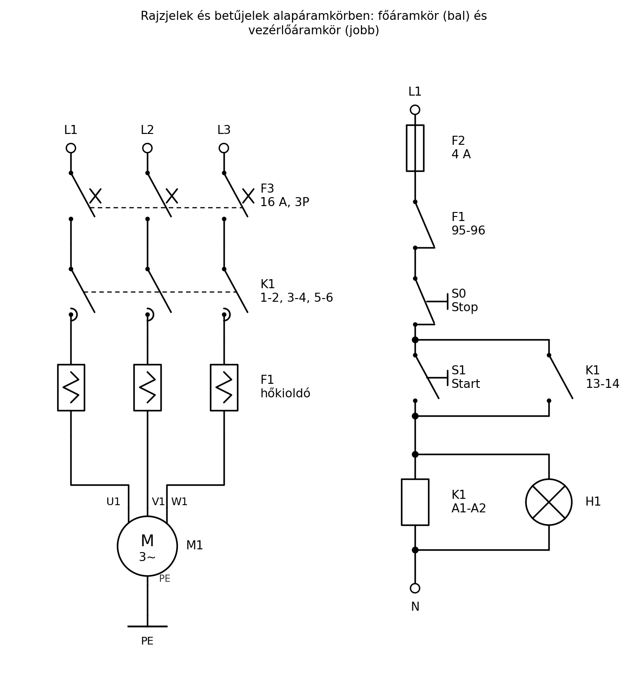

Statikus változat (mint a PDF-ben)
Képzeld el, hogy egy lakásfelújításon kapsz egy tervet, amelyen csak vonalak és apró, furcsa ábrák vannak. A megrendelő azt mondja: „A villanyt a terv szerint kell megcsinálni.” Ha ezt a „titkosírást” nem tudod elolvasni, nem fogod tudni, hová kell vezetéket húzni, hány kört kell kiépíteni, vagy mi kerül az elosztószekrénybe. A rajz a szakma közös nyelve. A villanyszerelő, a tervező, a kivitelező és a felülvizsgáló ugyanazokat a jeleket használja. Ha egy jelet félreolvasol, az nem gyenge osztályzatot jelent, hanem rosszul bekötött motort, lekapcsoló kismegszakítót vagy akár veszélyes hibát. Ebben az alfejezetben felépítjük ezt a közös nyelvet: megtanulod felismerni, lerajzolni és megfelelő betűjelekkel azonosítani a legfontosabb erősáramú készülékeket.
Nézd meg ezt az egyszerű kapcsolást! Itt látsz egy motort (M1), amelyet egy háromfázisú kismegszakítón (F3) és egy mágneskapcsoló főérintkezőjén (K1) keresztül táplálunk. A mágneskapcsoló tekercsét (K1) két nyomógombbal (S0 Stop, S1 Start) és egy jelzőlámpával (H1) vezéreljük.

Ábraolvasás. A bal oldali három függőleges ág a főáramkör: az L1, L2, L3 fázis az F3 háromfázisú kismegszakítón (a motor vezetékét zárlat ellen védi), a K1 mágneskapcsoló három főérintkezőjén (1-2, 3-4, 5-6) és az F1 hőkioldón át jut a motor U1, V1, W1 kapcsára; a motor fém teste a PE védővezetőre csatlakozik. A jobb oldali függőleges áramút a vezérlőáramkör az L1 és az N között: az F2 4 A-es biztosító csak a vezérlőkört védi, utána sorosan az F1 hőkioldó 95-96 bontó érintkezője és az S0 Stop (bontó) nyomógomb következik. Ha megnyomod az S1 Start (záró) nyomógombot, a K1 tekercs (A1-A2) feszültséget kap, a mágneskapcsoló behúz, a főérintkezők zárnak, és a motor elindul; az S1-gyel párhuzamos K1 13-14 öntartó érintkező a gomb elengedése után is zárva tartja a kört. Az S0 megnyomása vagy a hőkioldó működése megszakítja a tekercs áramát, és a motor leáll. A H1 jelzőlámpa a tekercssel párhuzamosan, saját ágon kapcsolódik, ezért akkor világít, amikor a tekercs feszültség alatt van. Ez a „rajz–valóság–mérés” hármas első lépése: a rajz pontosan megmutatja, mi hová van kötve.
Megjegyzés. A könyv motorvezérlési rajzain F1 a motor túlterhelés-védelme (hőkioldó, 95–96 és 97–98 érintkezővel), F2 a vezérlőkör védelme. A teljes jelölési rendben (Rajzjelek, betűjelek és kapocsjelölések függelék) a főkapcsoló Q1, a motorvédő kapcsoló Q2, a főköri zárlatvédelem F3; ezen az első, egyszerűsített rajzon az F3 háromfázisú kismegszakító a főkör zárlatvédelme, a túlterhelés ellen az F1 hőkioldó véd; a Q1 főkapcsoló az F3 előtt van, itt nem látszik. Ha a helyükön egyetlen Q2 hőkioldós motorvédő kapcsoló áll, az a zárlat- és a túlterhelés-védelmet is ellátja, és a külön F1 elmarad. Más terveken a számozás eltérhet: mindig a terv készülékjegyzéke dönt.
Definíció. A rajzjel (graphical symbol) egy készülék vagy alkatrész működését, feladatát tömör, szabványos ábrával jelöli. A rajzjel nem a szerkezetet, hanem a villamos funkciót ábrázolja: nem az a lényeg, hogy a kismegszakítónak milyen a hűtőbordája, hanem az, hogy megszakítja az áramot túlterhelés vagy zárlat esetén.
Definíció. A betűjel (reference designator, készülékjel) az adott rajzon szereplő konkrét készülék típusát és sorszámát adja meg, például Q1, K3, M2. A betű a készülék funkcióját, a szám a rajzon belüli példányát azonosítja.
Szabály. Egy rajzon ugyanaz a betűjel mindig ugyanazt a fizikai készüléket jelenti. Ha K1 tekercsét látod az egyik sorban, és K1 főérintkezőjét egy másik sorban, akkor ezek ugyanahhoz a mágneskapcsolóhoz tartoznak, fizikailag egy készülékben vannak.
A következő jeleket szinte minden épületvillamossági és gépi rajzon látni fogod. A jel formája mellett mindig a feladatot jegyezd meg, mert a szabvány a jelek családját a működés alapján rendezi el.
A jeltábla a fenti felsorolás jeleit a könyv kapcsolási rajzainak jelképeivel mutatja, soronként a megnevezéssel, a betűjellel és a tipikus kapocsjelöléssel; az utolsó oszlop azt jelzi, miben térhet el ugyanaz a jel egy régi terven (ellenőrizendő: a terv jelmagyarázata). A HTML-változat kvíz-módjában a név és a betűjel elrejthető, így a jelek felismerése gyakorolható.
Szabály (a jelek építőkockái). A jelek nagy része nem önálló ábra, hanem összerakott jel: jel = alapelem + működtetés + funkció. Az alapelem a záró, a bontó vagy a váltó érintkező; a működtetést a mozgó késhez szaggatott vonallal kapcsolt kiegészítő jel adja (kézi, nyomás, húzás/forgatás, helyzet, hőhatás, elektromágneses); a funkciót a rögzített érintkezőn vagy a késen ülő jel mondja meg (szakaszoló-vonás, megszakító ×, főérintkező félkör, késleltetési ív). Az alábbi ábra ezt mátrixban mutatja: a sorok az alapelemek, az oszlopok a működtetések, a cellákban a kombinált jel a nevével, a jellemző betűjellel és a kapocsjellel; alul a funkciójelek. Ha ismeretlen jelet látsz, bontsd szét így: melyik alapelem, mi működteti, és milyen funkciójel van rajta.
![Mátrix: sorokban a záró, bontó és váltó érintkező, oszlopokban a kézi, nyomó, húzó/forgató, helyzet-, hő- és elektromágneses működtetés jele; a cellákban a kombinált jel: kézi kapcsoló, START és STOP nyomógomb, forgókapcsoló, záró és kényszernyitású bontó végálláskapcsoló, hőkioldó 97–98 és 95–96 érintkezője, relé záró, bontó és váltó segédérintkezője, váltókapcsoló. Alatta a funkciójelek: szakaszoló, kismegszakító, mágneskapcsoló-főérintkező, meghúzás-késleltetett záró és bontó időrelé-érintkező.](figures/img/ve042-3.png)
Olvasd soronként: a bontó sor hőhatás-oszlopában a hőkioldó 95–96 érintkezője áll, amely túlterheléskor nyit és leállítja a motort; ugyanez az oszlop a záró sorban a 97–98 hibajelző érintkező. Az elektromágneses oszlop érintkezőit a tekercs működteti, ezért a valódi rajzon a tekercs jele külön áramútban áll, és csak a közös betűjel (K1) köti össze őket. A jelalakok egyszerűsítettek (ellenőrizendő: MSZ EN 60617-7); a HTML-változatban egy névre mutatva a rajzon kiemelődik a hozzá tartozó jel.
Továbbvitt eredmény. Ezeket a rajzjeleket közvetlenül használjuk az Áramúti, kapcsolási és huzalozási rajz; világítási áramkörök alfejezetben, ahol a teljes lakásáramköröket fogjuk megrajzolni és olvasni.
A betűjel a rajz legfontosabb szöveges kódja. A betűjel a terv jelmagyarázatában rögzített rendszert követi. A könyv egybetűs kódokat használ (Q kapcsoló/megszakító, F védelem, K relé/mágneskapcsoló stb.), amelyek a funkció szerinti betűosztályokat követik. Az IEC 81346-2 kétbetűs kódjai (pl. QA, KF, FC – ellenőrizendő: IEC 81346-2 táblázata) és a régi IEC 60750 szerinti kódok (KM, KA, QF) is előfordulnak. A leggyakoribb erősáramú betűjelek:
Megjegyzés. Egyes tervek a funkció pontosítására két betűt használnak. A régi IEC 60750 szerinti kódok: KM = mágneskapcsoló, KA = segédrelé, KT = időrelé, QF = megszakító, SQ = végálláskapcsoló; az IEC 81346-2 más második betűket használ (pl. QA, KF, FC – ellenőrizendő). Régi magyar terveken gyakran találkozol más betűjelekkel is (pl. a relé K vagy R, a mágneskapcsoló C vagy K), ezért a rajzon mindig keresd meg a jelmagyarázatot.
A kapcsolási rajzjel a funkciót mutatja (mi mit kapcsol, mi mivel van összekötve), a szerelési (alaprajzi) jel a helyet és a szerelvény fajtáját: hová kerül a falban vagy a mennyezeten, és milyen kapcsolót, aljzatot, lámpát kell oda felszerelni. Ugyanaz az egypólusú kapcsoló a kapcsolási rajzon egy érintkező, az alaprajzon egy kis kör ferde vonallal (ellenőrizendő: MSZ EN 60617-11 aktuális része és jelalakjai).
| A jel leírása | Megnevezés | Betűjel | Megjegyzés |
|---|---|---|---|
| kis kör, ferde vonal, a végén egy vonás | egypólusú kapcsoló | S | egy lámpa egy helyről |
| ugyanez két vonással | kétpólusú kapcsoló | S | L és N együtt kapcsolva |
| kör, két szétnyíló ferde vonal | csillár- (soros) kapcsoló | S | két lámpacsoport külön |
| körön átmenő vonal, két végén vonás | váltókapcsoló | S | kapcsolás két helyről |
| két keresztező átmenő vonal | keresztkapcsoló | S | harmadik és további hely |
| kettős (koncentrikus) kör | nyomógomb | S | impulzusrelé, automata, csengő |
| kapcsolójel, a körben X | jelzőlámpás (glimmlámpás) kapcsoló | S | az állapotot jelzi |
| ferde vonal, mellette kitöltött ék | fényerő-szabályozó | S | a lámpa típusához illesztendő |
| félkör a faltól induló vonalon, érintő vonással | védőérintkezős aljzat | X | lakásban ez az általános |
| aljzatjel, mellette 2 | kettős aljzat | X | a szám a darabszám |
| aljzatjel „IP44” felirattal | csapfedeles (IP44) aljzat | X | nedves hely, szabadtér |
| aljzatjel „3~” felirattal | háromfázisú (CEE) aljzat | X | 5 kapocs; az áramerősséget a jelkulcs adja |
| aljzatjel kapcsoló-vonallal | kapcsolt aljzat | X | saját kapcsolóval |
| kör, benne X | mennyezeti lámpatest | E | a típust felirat adja meg |
| kör-X, a fal felől vastag vonal | fali lámpatest | E | magasságát a terv adja |
| keskeny téglalap vagy végvonásos hosszú vonal | fénycsöves / LED-sávos lámpatest | E | a jel hossza követi a lámpát |
| kör-X négyzetes keretben | biztonsági (menekülési) lámpatest | E | állandó betáplálást igényel |
| félkör, kifelé mutató sugarakkal | mozgásérzékelő | B | a sugarak a figyelt tér felé |
| négyzet „lx” felirattal | alkonykapcsoló | B | a fényérzékelő helyét is jelölni kell |
| kis üres kör | kötődoboz | X | itt ágaznak el a nyomvonalak |
| átlósan felezett, félig kitöltött téglalap | lakáselosztó | +E1 | helyjel |
| téglalap „kWh” felirattal | mérőhely | P1 | az elosztói engedélyes előírása szerint |
| félkör (harang), két csatlakozóvonallal | csengő / kaputelefon | H | rendszerint törpefeszültség |
| téglalap „RJ” vagy „TV” felirattal | adat- és TV-aljzat | X | erősáramtól elválasztva |
| pontból felfelé, illetve lefelé mutató nyíl | nyomvonal felfelé (felszálló) / lefelé | W | másik szintre megy tovább |
| ferde vonások a nyomvonalon, vagy vonás és szám | vezetékszám-jelölés | W | 3 vonás = 3 vezető |
Az ábra harmadik oszlopa mutatja, mivé „bomlik ki” ugyanaz a szerelvény a kapcsolási rajzon, a negyedik pedig azt, hány ér fut hozzá egy tipikus kapcsolásban; a keresztmetszeteket és az erek számát mindig a terv és a méretezés határozza meg (példaértékek, ellenőrizendő: MSZ HD 60364-5-52). A HTML-változat kvíz-módjában a megnevezés és a betűjel elrejthető. A jelek a Rajzjelek függelék szerelési jeltábláival egyeznek.
Szabály. A jelek alakja tervezőnként és tervezőprogramonként eltérhet, ezért mindig a terv saját jelkulcsa a mérvadó. Ha egy jel hiányzik a jelkulcsból, kérdezd meg a tervezőt.
A jeleket az Alaprajzok, fővezetéki terv és egyvonalas rajz alfejezetben valódi lakásterven használjuk.
Az MSZ EN 60617 / IEC 60617 jelrendszer az 1990-es évek óta fokozatosan kiszorította a régi, tisztán nemzeti magyar (MSZ) jeleket. A legtöbb alapvető erősáramú jel nagyon hasonlít, mert a magyar szabvány is a klasszikus európai iskolát követte, de van néhány fontos különbség, amelyet a régi tervek olvasásakor észre kell venni:
Szabály. Régi terven soha ne feltételezz semmit: ha bizonytalan vagy, keresd meg a terv jelmagyarázatát (legend) vagy a régi MSZ szabványgyűjteményt (jellemzően MSZ 1700 sorozat, ellenőrizendő: pontos szám). Az áramütéses balesetek jelentős része a rajz félreolvasásából fakad, ezért a bizonytalanságot mindig tisztázni kell.
Egy készüléket a rajzon három adat azonosít pontosan:
Szabály. A kapocsjelölés a fizikai bekötés térképe. Mindig kösd a vezetéket arra a kapocsra, amit a rajz mutat. Ha a motort U1-re, V1-re, W1-re kötöd, a forgásirány megfelel a rajznak; ha felcseréled két fázist, a motor megfordul.
Szabvány.
A rajzjelek elsődleges forrása az MSZ EN 60617 (IEC 60617) szabványcsalád. Ez a nemzetközi szabvány egységesíti a kapcsolási rajzokon használt jeleket, hogy egy magyar, német vagy francia terv ugyanúgy legyen olvasható. Az európai és magyar villamos dokumentációk ezt a jelkészletet használják. A szabvány jelek és azok kombinációinak gyűjteménye; a konkrét készülékek (pl. mágneskapcsolók) rajzjelei az MSZ EN 60947 (készülékek) és az MSZ EN 60617 (kapcsolási jelek) összhangjából adódnak. A betűjelek (referenciajelölés) az IEC 81346 (korábban IEC 61346 / MSZ EN 61346) alapelveit követik – ellenőrizendő: aktuális jelölés. A méretezett vagy gyártói adatlapos kiválasztáshoz a kapocsjelölés a gyártó adatlapján szerepel.
Egy kolléga egy régi társasházban cserélte a lakáselosztót. A régi tervet nézte, hogy hová kell kötni a villanytűzhely külön körét. A terven egy olyan kismegszakítót látott, amelynek a jele nagyon hasonlított egy kapcsolóhoz, de mellette ez állt: „C16”. A kapcsoló jele mögött kis szaggatott vonal volt, ami a túlterhelésvédelmi kioldót jelölte. A szerelő ezt először sima kapcsolónak nézte volna, de a C16 felirat és a jel kiegészítő eleme egyértelművé tette, hogy kismegszakítót kell felszerelnie. Ez a kis különbség a rajzjel felismerésén múlt: a túláramvédelem nélküli kapcsoló nem védi meg a tűzhely vezetékét, és melegedéshez, lakástűzhöz vezethetett volna. A jelmagyarázat és a szabványos jel ismerete tette pontossá a munkát.
Hiba 1: következetlen betűjelölés egy terven belül. A kismegszakítót egyes terveken Q, másokon F jelöli („az is védelem”); mindkettő előfordul, a betűjelet a projekt jelmagyarázata és az alkalmazott szabványkiadás dönti el. Hiba, ha egyazon terven belül ugyanazt a készüléktípust egyszer Q-val, egyszer F-fel jelölöd: a másik szerelő azt hiheti, hogy az egy sima olvadóbiztosító, és nem tudja, hogy azt a kapcsolót ki is lehet kapcsolni. Helyes gyakorlat: A választott rendszert (ebben a könyvben: kismegszakító F, áram-védőkapcsoló Q) a jelmagyarázatban rögzítsd, és a teljes tervben tartsd.
Hiba 2: Záró és bontó érintkező felcserélése. Egy nyomógombot vagy segédérintkezőt alaphelyzetben (tehát működtetés nélkül) rajzolunk. A záró (NO) érintkező alaphelyzetben nyitva van, a bontó (NC) alaphelyzetben zárva van. Ha a rajzon felcseréled, a vezérlés pontosan az ellenkezőjét fogja csinálni: a vészleállító gomb nem állítja le a motort, hanem elindítja. Helyes gyakorlat: A rajzot mindig úgy készítsd, hogy a készülék feszültségmentes, alaphelyzetben van.
Hiba 3: Hiányzó kötéspont (dot) a T-elágazásnál. Ha két vezeték keresztezi egymást, de nincs rajtuk pont, az azt jelenti, hogy nincs elektromos összeköttetés. Ha egy vezeték elágazik, azt a pontot mindig rajzold meg. Helyes gyakorlat: A könyv kapcsolási rajzain minden elágazást kötéspont jelöl; a saját rajzodon is ellenőrizd, hogy minden T-elágazásnál van-e pont.
Gyakorlás: ennek az alfejezetnek a kidolgozott példái, gyakorlatai és megoldással ellátott feladatai az Összefoglaló feladatgyűjtemény villanyszerelő tanulóknak című kötet 12.1 szakaszában találhatók.
A villamos rajz a szakma közös nyelve. Ebben az alfejezetben megtanultad a legfontosabb erősáramú rajzjeleket (forrás, ellenállás, kapcsoló, biztosító, kismegszakító, lámpa, motor, transzformátor), és a készülékeket azonosító betűjeleket (Q kapcsoló, F védelem, K relé/mágneskapcsoló, S nyomógomb, H jelzőlámpa, M motor, T transzformátor). A rajz–valóság–mérés hármas elve itt azt jelenti, hogy minden rajzolt jelhez tartozik egy fizikai készülék és egy mérési pont. A kapocsjelölések (1/2, 3/4, 13/14, A1/A2, U1/V1/W1) megmutatják, hová kell a vezetéket kötni. A régi MSZ és a mai IEC-alapú jelek nagyrészt hasonlóak, de eltérések előfordulnak, ezért a bizonytalan jelet mindig tisztázni kell. Továbbvitt eredmény. Ezeket a jeleket és betűjelöléseket használjuk az Áramúti, kapcsolási és huzalozási rajz; világítási áramkörök alfejezetben, ahol a teljes lakás- és épületvillamossági kapcsolásokat fogjuk rajzolni és olvasni; szabványos alapjuk az MSZ EN 60617 (IEC 60617).